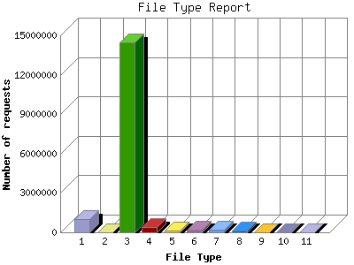

The File Type Report identifies the type of information that is requested from the web site. GIF and JPG are the two types of graphic (image) files that are most commonly supported by web browsers. HTML (sometimes abbreviated HTM), ASP, and [directories] all represent actual pages. The number of image requests will almost always outnumber page requests as one page may contain several images.
This report shows results with at least 0.100000 percent of the total bytes. This report is sorted by amount of bytes transferred.

| File Type | Number of requests | Percentage of the bytes | |
|---|---|---|---|
| 1. | .htm [Hypertext Markup Language] | 979,172 | 57.60% |
| 2. | .mp3 [MP3 sound files] | 24,296 | 13.49% |
| 3. | .gif [GIF graphics] | 14,460,341 | 11.68% |
| 4. | .jpg [JPEG graphics] | 373,106 | 10.13% |
| 5. | [directories] | 113,420 | 4.80% |
| 6. | .css [Cascading Style Sheets] | 218,443 | 0.72% |
| 7. | .txt [Plain text] | 202,137 | 0.60% |
| 8. | .rdf | 152,745 | 0.44% |
| 9. | .swf | 2,117 | 0.22% |
| 10. | .html [Hypertext Markup Language] | 7,776 | 0.11% |
| 11. | .pdf [Adobe Portable Document Format] | 508 | 0.11% |
| [not listed: 8] | 461 | 0.10% | |
This report was generated on January 18, 2009 00:22.
Report time frame April 2008, 0 02:34 to 2009, 0 00:20.